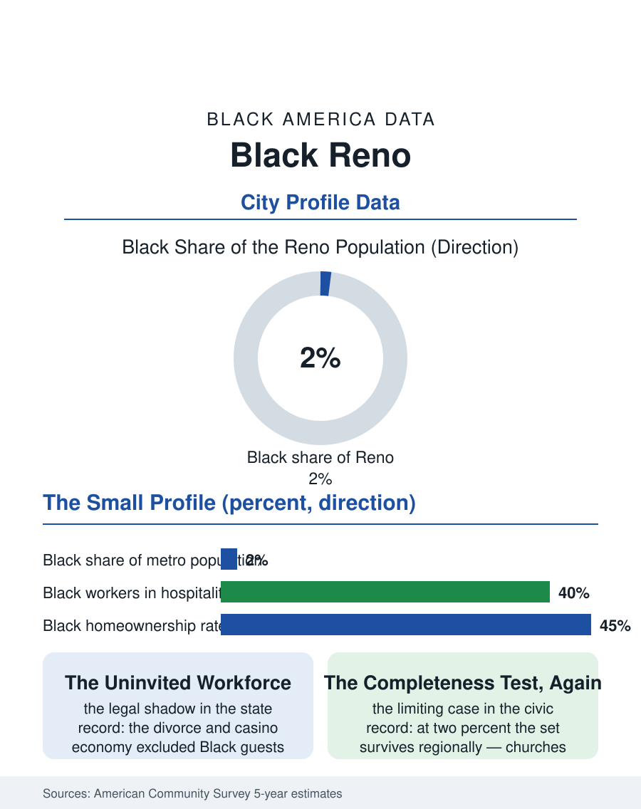

Black Cities
The Smallest Share: Black Reno
Two percent of the Biggest Little City, a community that worked the party it was barred from and stayed for the reinvention. The Reno file.

Reno's Black community is one of the smallest in this atlas, roughly seven thousand people in a metro of about five hundred thousand, barely two percent, in a city whose fame, gambling and divorce in its first century, tourism and logistics in its second, never centered them. The census counts a community assembled by the railroad, the casinos, the military outposts of the high desert, and lately the warehouse and technology economy remaking Nevada's economy. This article reads the Reno file.
Divorce Ranches and Dealers' Schools
Nevada's Black history carries a specific legal shadow: for decades the state's casinos and its marriage-and-divorce economy operated in a racial order as rigid as the South's, with Black visitors famously excluded from the Strip-era properties and Black residents of Las Vegas confined to the Westside, and Reno, the smaller divorce capital, Ran the same system at smaller scale. The community that formed anyway grew from the Union Pacific and Southern Pacific lines, from the service economy of the wedding chapels and divorce ranches, whose kitchens and stables employed Black workers the guest registers excluded, and from the military installations of the desert, the naval air station at Fallon and the depots. The civil rights file has a distinctive Nevada chapter, the state's early-1960s integration of its casinos under federal and movement pressure, in which Reno's small NAACP chapter and its church leadership carried a weight the population count would never predict. The community's geography consolidated on the north side and in Sparks, its institutions, a handful of historic congregations, the northern Nevada Black cultural presence, functioning as the whole region's Black infrastructure for a population spread across two counties of high desert.
The Numbers in the Biggest Little City
The American Community Survey profile reflects a small, working community inside a transformed economy. The casino floor's decline as an employer and the rise of the logistics corridor, the vast warehouse district north of the city built by the e-commerce era, plus the Tesla gigafactory's gravitational pull in neighboring Storey County and the technology firms colonizing the region, have rewritten the employment map within a decade: Black workers appear across the hospitality remainder, the warehouse economy, health care, and the public sector in the patterns of a small population riding a boom it did not design. Housing costs, driven by California in-migration, have outrun the local wage structure with a speed the surveys struggle to annualize, and the Black community's modest homeowner base, rooted in the older north side, faces the appreciation's double edge in miniature. The population count grows slowly from its tiny base, fed by the same California exodus that drives the region, with Las Vegas's far larger Black community functioning as the state's center of gravity and Reno's as its northern outpost, connected by the institutions, the statewide NAACP, the Divine Nine chapters at the University of Nevada, Reno, whose Black enrollment anchors a young professional seedbed the community has never previously had at this scale.
Small Numbers, Whole Institutions
Reno is this atlas's limiting case for the completeness question the Abilene file posed: can two percent sustain the set? The record shows a negotiated yes, thinner and more regional than elsewhere: the churches double as the cultural center, the Juneteenth celebration functions as a statewide northern gathering, the Black chamber and professional networks operate metro-wide and digitally in a way the older files' institutions, built for denser populations, never needed to. The political representation is correspondingly personal, individual officeholders rather than a bloc, in the pattern of the interior West's small communities from Albuquerque forward. The forward file is the new economy's test: whether the logistics and technology buildout's hiring, training, and contracting reach a community of seven thousand that the old economy excluded by name, in a state whose modern brand is reinvention. The Reno file closes with the neon's second city, where the Black population's percentage rounds to a footnote and its presence rounds to a century, from the divorce ranches' kitchens to the university's lecture halls. The census bureau counts two percent. The file's judgment, applying the atlas's rule that percentage is not the measure, counts a community that maintained itself through an era when the town's whole industry was a party it was not invited to, and stayed to see the town become something else. Staying, in Reno as everywhere in these pages, was the strategy and the statement both.
More in Black Cities
Black Atlanta: Population, Distribution, and Growth of a Black Metropolis
Metro Atlanta holds more than two million Black residents — roughly one in three, second only to New York. The suburban distribution, migration history, and composition of Black Atlanta in the census data.
Black New York: The Largest Black Population in America
The New York metropolitan area holds about 3.4 million Black residents — more than any metro in the nation — and the city itself about two million. The census profile.
Black Washington: The District and the Metro
The Washington metro holds about 1.6 million Black residents, and the District itself — long a majority-Black city — now records a Black share near 41 percent. The census profile.
Source: U.S. Census Bureau, American Community Survey 5-year estimates for Reno, NV; Nevada historical society records.